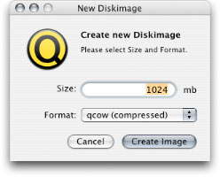
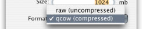
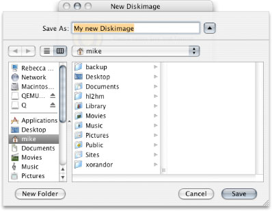

Q Help
Q Help
Create a new Diskimage
To create a new Diskimage select "create new Diskimage..." from the "Tools" Menu.

- Select the Size
Please enter the size of the Diskimage. The size is measured in megabytes.
See Create or edit a guest PC for size recommendations.
- Select the Format

- qcow
qcow is QEMUs own format for diskimages. qcow images start with a few kilobytes and grow to the desired size. This saves Harddiskspace until the image eventually reaches the maximum size. qcow images do not shrink when you delete data on them.
- raw
raw, also known as img or dsk are just plain diskimages with no compression. They take longer to create and are original size from the beginning. This image format can be mounted by OS X (you may have to rename them to .img). Please remember that OS X will write special files to the image if you mount it under OS X.
- Select a Filename

Please enter a Location and Filename for your new Diskimage. Please remember the place of your new Diskimage.
- Please wait...
qcow images are created almost instantly. raw images can take some minutes to be created (depending on their size).
- You're Done!